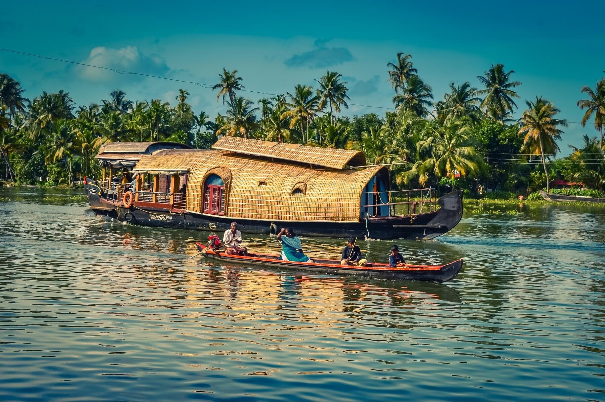
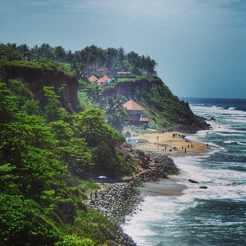
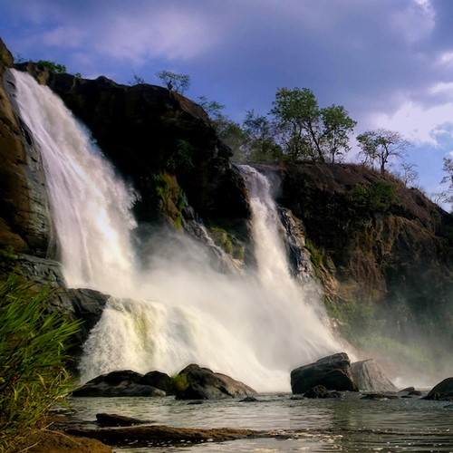
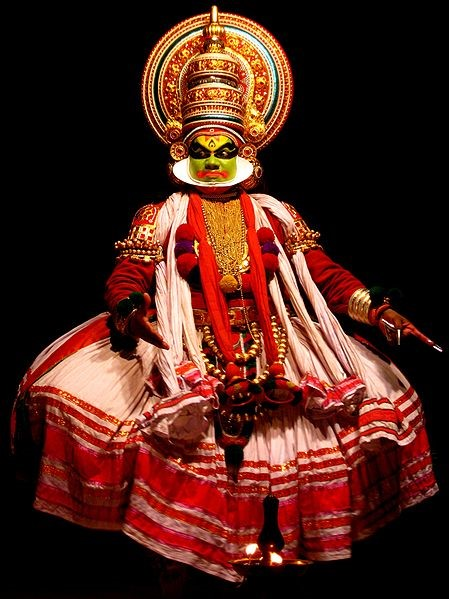
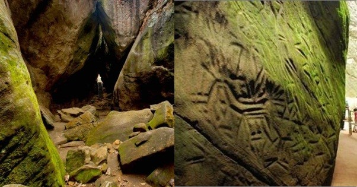
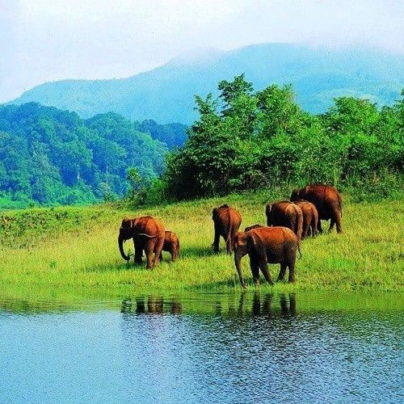

<main>
    <figure>
        
        <figcaption>The Tea Gardens which are located in Munnar, Kerala. 
            Munnar is known for its beautiful tea estates and  is an important hub of tea trade in India. </figcaption>
            
        <figcaption>The Lulu Shopping Mall in Kochi, Kerala is one of the largest shopping malls in India. 
            Inside is South India’s largest ice-skating rink. </figcaption>
            
        <figcaption>The city of Alleppey (pronounced Ahl-uh-pay)in Kerala is known for its peaceful Backwaters. 
            Many go on houseboats in Alleppey to enjoy the scenery as well as Indian cuisine on the comfortable and luxurious boats.</figcaption>
            
        <figcaption>Fort Kochi (pronounced Koh-chee) is known for its beautiful European architecture as it is the first European township in India. 
            There are many sights to see in Fort Kochi such as the Indo-Portuguese Museum, Santa Cruz Bassicalla, and the Fort Kochi Beach. </figcaption>
            
        <figcaption>The Varkala(pronounced Var-kah-la) Beach is located in Thiruvananthapuram, Kerala. 
            This beach is a famous attraction as many say its waters are known for having therapeutic and healing qualities.</figcaption>
            
        <figcaption>The Athirappilly (pronounced Ah-thee-rah-pihl-lee) Falls located in Thrissur, Kerala is the largest waterfall in Kerala. 
            It is also called the Niagara of India as it resembles Niagara Falls in the US. </figcaption>
            
        <figcaption>
            Kathakali is a form of Indian classical dance that portrays a story through movements and expressions. 
            Many of these performances can be seen in the town called Varkala.
        </figcaption>
             
        <figcaption>
            The Edakkal caves(pronounced ed-ah-kahl) are located in the Ambukthy Hills (pronounced ahm-book-thee) in the Wayanad district of Kerala. 
            These caves store drawings from the Stone Age while some are even believed go back 7000 years.

             </figcaption>
             
        <figcaption>
            The Periyar National Park (pronounced peh-ree-yahr) in Kerala is a wildlife sanctuary possessing endangered plants and animals. 
            This national park is known for their notable tiger and elephant population. 
             </figcaption>
    </figure>
	</main>
